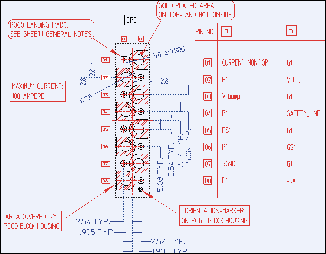
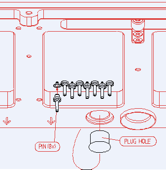

High Current DPS (HC-DPS)
The High Current DPS serves as a power source for devices requiring low voltages but drawing high currents or having large current swings. Each High Current DPS provides up to 100 A. Two High Current DPSs, for example, can be used in parallel (ganged) to provide up to 200 A.
| Supported V93000 systems : Smart Scale (SmarTest 7), Pin Scale |
Safety Circuits
The following safety precautions are built-in to the High Current DPS:
- Isolation
The 100 A low impedance cable to the DUT board includes three signal pins (SGND, +5 V DUT and Safety_Line) that are isolated from the High Current DPS via optocouplers and are floating.
- Shutdown
The +5V DUT line must have +5 V (relative to SGND) applied to it for the High Current DPS to operate. The Safety_Line is connected to the +5V DUT line via an internal pull-up resistor. The High Current DPS monitors this line: If high, the High Current DPS operates correctly; if pulled down, the High Current DPS is switched to tri-state. This safety line is bidirectional: When the High Current DPS detects an internal failure, it pulls down this line. You can also use the safety line to shut down different supplies synchronously in the event of a failure.
- Overtemperature protection
It is possible to add a heat or smoke sensor to the DUT board in such a way that the safety line will be pulled down and will shut down all High Current DPS units simultaneously.
- Overvoltage protection
There are three levels of protection:
- Programmable protection: This is set with the firmware command PSOP and can be made active (at four different overvoltages) or inactive. The default is inactive (overvoltage protection off). The protection switches the High Current DPS to tri-state in order to protect the DUT. This is the standard protection level during testing, as it will not be triggered under normal operating conditions.
- If the voltage at the output of the High Current DPS is more than 1.8 V above the programmed value, three diodes, connected in series between the output and the regulator, begin to conduct and regulate the voltage down.
- If the voltage at the output of the High Current DPS rises to more than 4.8 V, a crowbar circuit short-circuits the 12 V supply voltage of the High Current DPS itself.
- Overcurrent protection
There are two modes of protection:
- Constant current mode: When the current limit is reached, the High Current DPS operates as a constant current source.
- Clamp mode: When the current limit is reached, the High Current DPS switches to tri-state.
Three different delay times (2 ms, 6 ms, and 8 ms) can be programmed
using the firmware command HSCM. See the Command
Reference manual for more information.Note When the High Current DPS switches to tri-state because it has reached the current limit, it does not pull down the safety line.Note When the High Current DPS is disconnected using the off_state 'act' (for example, in the blue legacy Level Setup Window) there will still be at least 200 mV present at the force+ line. The DPS cannot be programmed to 0 V!
Advantest recommends connecting a 100 Ohm resistor in parallel to the capacitors and the DUT. This resistor will discharge the capacitors when the board is disconnected or the DPS is switched to HiZ and prevent damage to the device. It will also reduce the need to use the act current mode which has the above mentioned residual output voltage.
- Balancing circuits
The 12 phase stepdown-converter is organized by six pairs, phase-shifted by 180° each. Each pair has its own shunt resistor to measure its output current. All six current measurements will be summed up to calculate a mean value. Regulators compare the mean value with each of the six single currents and balance them to be equal.
When the current of one stage rises so much that balancing becomes impossible, a failure signal is generated which:
- switches the HC-DPS to tri-state
- creates a flag to be read by the software
- switches all High Current DPSs which are connected to the same safety line to tri-state.
Power Connections at DUT Board
Advantest recommends the use of power planes inside the DUT board to achieve the low resistance and low inductance that is needed for proper operation. Use at least four planes in the following order: Out, Return, Out, Return, to keep inductance and magnetic stray fields to a minimum.
All power planes need to have the same shape and should be positioned directly above one another without other planes in-between. Each plane should have a minimum thickness of 200 nm.
All sense lines should be connected as close to the DUT as possible. If two HC-DPSs are connected in parallel (ganged), connect the sense lines of both High Current DPS boards at exactly the same point.
Low-ESR bypass- or bulk capacitors of at least 5 mF are required for stability.
Route sense lines close together to avoid creating loops which receive the magnetic field of the DUT board and cause instability in the DPSs.
Special Mounting Considerations
The footprint recommended for the high current DPS connector is shown below. The angular pads are required for the side of the DUT board that mounts to the DUT interface. The pads are designed to allow good heat transmission from the soldering iron to the pad (the flange of the pins has a diameter of 4.6 mm).
This additional area for soldering is not required on the other side of the board, therefore it is also possible to use round pads with a diameter of about 5 mm on the top surface of the DUT board.
The pins and a fixture that must be used to mount the pins correctly are included in the pin kit E7002-60120.

Soldering Procedure
The following procedure requires two people.
Required Tools:
- 2 soldering irons with a tip diameter between 2 and 2.5mm.
(Advantest recommends METCAL MX soldering stations, or equivalent.)
- Fixture for DPS pins (included in the E7002-60120 kit)
Required Materials:
- DUT board (PCB)
- 8 DPS pins (included in the E7002-60120 kit)
- Flux core wire solder
- Soldering flux (in addition to the flux in the solder)
Procedure:
- Insert all 8 pins into the fixture.Note At the PCB side, the distance from the flange to the end of the pin is 5 mm. If the thickness of the PCB is less than that and if it is not acceptable to let the ends stick out, the pins have to be shortened.
- Apply some flux to the shanks of the pins and insert them into the PCB.
- Press the fixture to the PCB and check for correct alignment. The pins should be inserted from the side of the DUT board that will be connected to the DUT interface.
- Make sure all pins and the fixture are in an upright position, with no air gap between the pins and the PCB.
- Rotate the DUT board so that it is in a horizontal position with the fixture on the bottom side.
- Apply some flux to the holes.
- Insert a soldering iron in the hole (from the top surface of the board) and add
some solder. Note Move the tip of the soldering iron slightly during the soldering process to enhance solder flow and to allow the escape of air-bubbles
- Use the other soldering iron to heat the pad on the bottom surface of the board.
The tip of the soldering iron must have contact with the pad as well as the pin
itself. Note The fixture has cut-outs so that good heat transmission from the soldering iron to the pad can be achieved.
- Add some solder to the bottom side, then complete the connection by soldering simultaneously from both sides of the board.
- Check the solder connection on both sides and ensure that it fills all gaps.
- Repeat the soldering procedure for the other 7 pins.
- Remove fixture when the pins have cooled.Note To ensure correct alignment of the pins, it is essential to do all soldering using the fixture from the E7002-60120 kit. Failure to do so can result in damage to the pins and the DPS-connector when the DUT board is mounted to the DUT interface.
"Keying" the DUT Board Stiffener for the High Current DPS
A coding plug in the DUT board stiffener must be moved from the top to the bottom of the stiffener (as shown below) to indicate the position of a HC-DPS pogo block. This is to avoid the possibility of placing a HC-DPS DUT board onto a test head that does not have the HC-DPS pogo block. Doing so could damage both the board and interface. See Hole Plug for more information.

Functional changes
- Introduced before SmarTest 6.3.2